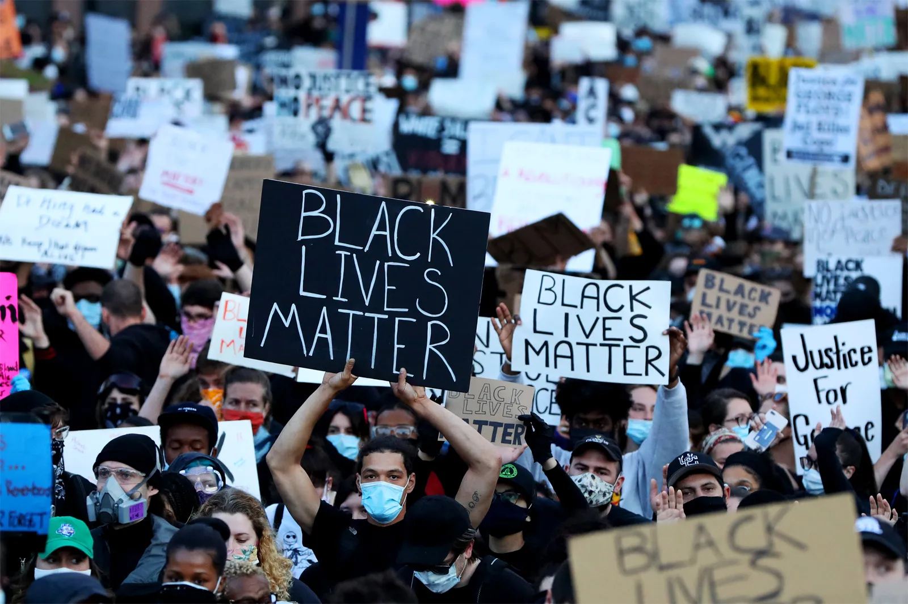
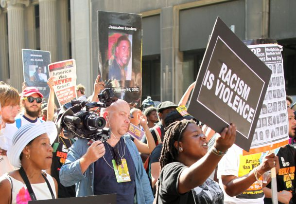

This website wil teach you parts of the history of racism
Racism exists when one ethnic group or historical collectivity dominates, excludes, or seeks to eliminate another on the basis of differences that it believes are hereditary and unalterable. An ideological basis for explicit racism came to a unique fruition in the West during the modern period. No clear and unequivocal evidence of racism has been found in other cultures or in Europe before the Middle Ages. The identification of the Jews with the devil and witchcraft in the popular mind of the thirteenth and fourteenth centuries was perhaps the first sign of a racist view of the world. Official sanction for such attitudes came in sixteenth century Spain when Jews who had converted to Christianity and their descendents became the victims of a pattern of discrimination and exclusion.
The period of the Renaissance and Reformation was also the time when Europeans were coming into increasing contact with people of darker pigmentation in Africa, Asia, and the Americas and were making judgments about them. The official rationale for enslaving Africans was that they were heathens, but slave traders and slave owners sometimes interpreted a passage in the book of Genesis as their justification. Ham, they maintained, committed a sin against his father Noah that condemned his supposedly black descendants to be "servants unto servants." When Virginia decreed in 1667 that converted slaves could be kept in bondage, not because they were actual heathens but because they had heathen ancestry, the justification for black servitude was thus changed from religious status to something approaching race. Beginning in the late seventeenth century laws were also passed in English North America forbidding marriage between whites and blacks and discriminating against the mixed offspring of informal liaisons. Without clearly saying so, such laws implied that blacks were unalterably alien and inferior.,
During the Enlightenment, a secular or scientific theory of race moved the subject away from the Bible, with its insistence on the essential unity of the human race. Eighteenth century ethnologists began to think of human beings as part of the natural world and subdivided them into three to five races, usually considered as varieties of a single human species. In the late eighteenth and early nineteenth centuries, however, an increasing number of writers, especially those committed to the defense of slavery, maintained that the races constituted separate species.
The Nineteenth century was an age of emancipation, nationalism, and imperialism--all of which contributed to the growth and intensification of ideological racism in Europe and the United States. Although the emancipation of blacks from slavery and Jews from the ghettoes received most of its support from religious or secular believers in an essential human equality, the consequence of these reforms was to intensify rather than diminish racism. Race relations became less paternalistic and more competitive. The insecurities of a burgeoning industrial capitalism created a need for scapegoats. The Darwinian emphasis on "the struggle for existence" and concern for "the survival of the fittest" was conducive to the development of a new and more credible scientific racism in an era that increasingly viewed race relations as an arena for conflict rather than as a stable hierarchy.
The growth of nationalism, especially romantic cultural nationalism, encouraged the growth of a culture-coded variant of racist thought, especially in Germany. Beginning in the late 1870s and early 1880s, the coiners of the term "antisemitism" made explicit what some cultural nationalists had previously implied--that to be Jewish in Germany was not simply to adhere to a set of religious beliefs or cultural practices but meant belonging to a race that was the antithesis of the race to which true Germans belonged.
The climax of Western imperialism in the late nineteenth century "scramble for Africa" and parts of Asia and the Pacific represented an assertion of the competitive ethnic nationalism that existed among European nations (and which, as a result of the Spanish-American War came to include the United States). It also constituted a claim, allegedly based on science, that Europeans had the right to rule over Africans and Asians.
The climax of the history of racism came in the twentieth century in the rise and fall of what might be called overtly racist regimes. In the American South, the passage of racial segregation laws and restrictions on black voting rights reduced African Americans to lower caste status. Extreme racist propaganda, which represented black males as ravening beasts lusting after white women, served to rationalize the practice of lynching. A key feature of the racist regime maintained by state law in the South was a fear of sexual contamination through rape or intermarriage, which led to efforts to prevent the conjugal union of whites with those with any known or discernable African ancestry.